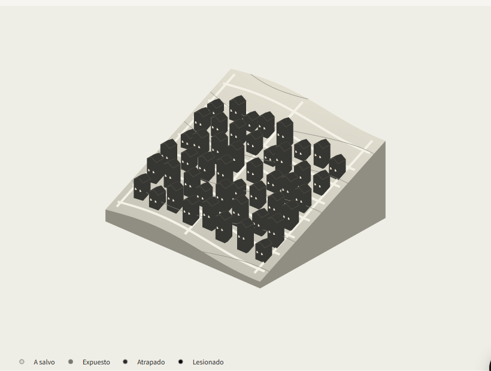
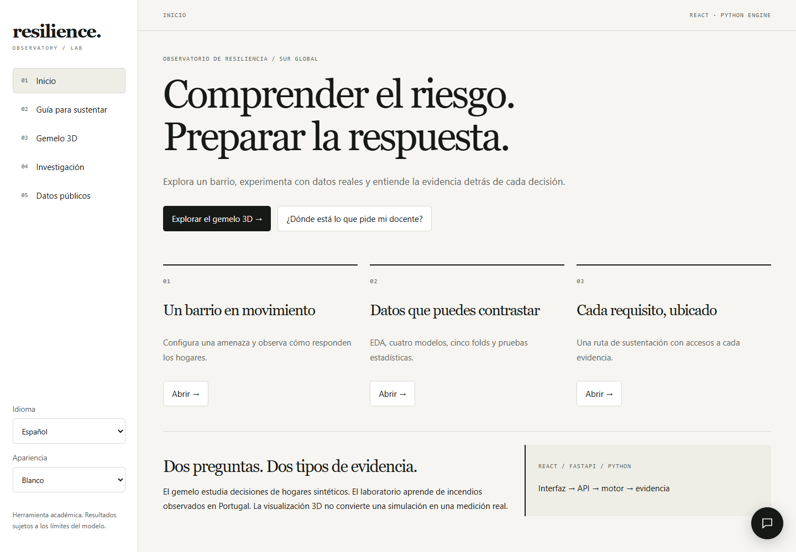
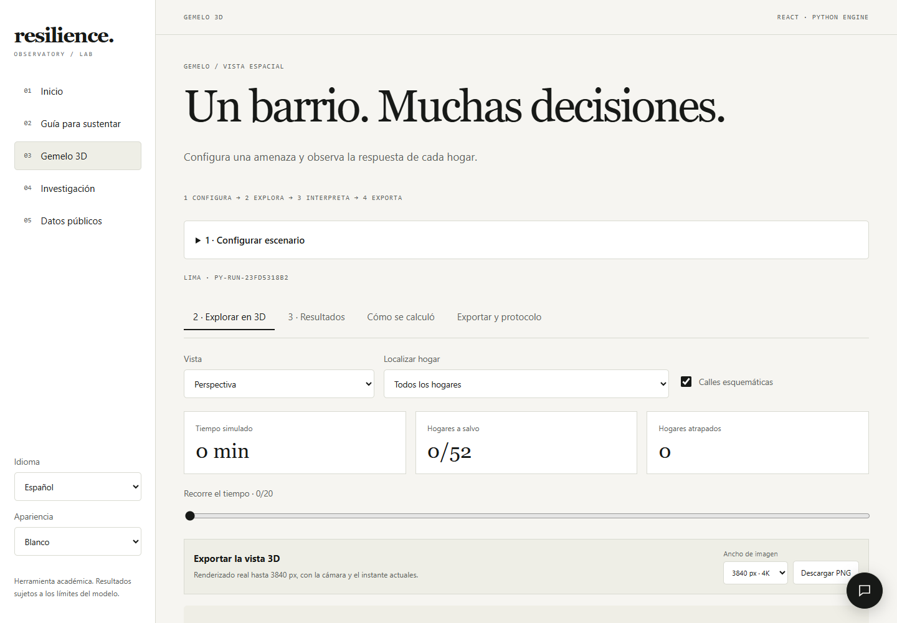
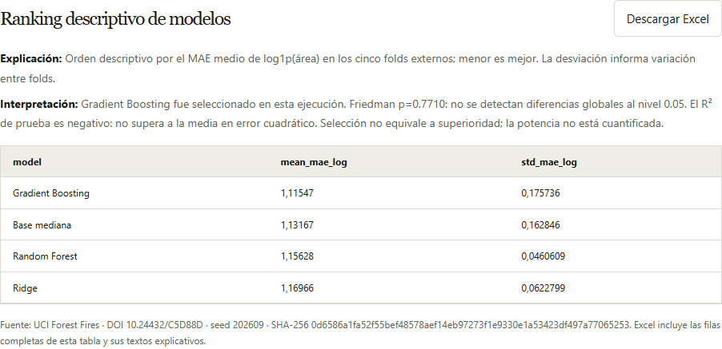

Simular un escenario
Configura una amenaza, la intensidad y el aviso previo. El motor Python representa decisiones de hogares, apoyo comunitario y respuesta institucional.
Explora cómo responden los hogares ante un desastre, compara modelos con datos reales y transforma los resultados en evidencia que puedes explicar.

Una vista interactiva permite seguir hogares y comparar escenarios de evacuación.
Representación esquemática de hogares sintéticos; no es una reconstrucción geográfica observada.
Configura una amenaza, la intensidad y el aviso previo. El motor Python representa decisiones de hogares, apoyo comunitario y respuesta institucional.
Recorre CRISP-DM, explora UCI Forest Fires, entrena cuatro modelos y compara resultados con validación espacial anidada de cinco folds externos y cinco internos.
Descarga tablas de Excel, imágenes de hasta 4K y figuras vectoriales. Cada tabla y figura explica qué muestra y cómo interpretar sus resultados.



Datos públicos: USGS, NASA POWER y OpenStreetMap, con procedencia y límites de consulta. Su uso contextual no transforma hogares sintéticos en registros observados.
Esta página es una presentación estática con capturas. La aplicación completa utiliza React, FastAPI, Python, LangGraph y scikit-learn; necesita el backend activo.
Una vez iniciada en tu equipo, abre http://127.0.0.1:8010/. Esa dirección solo funciona en el equipo donde corre el servidor.
La documentación técnica y las instrucciones de instalación están en el repositorio.